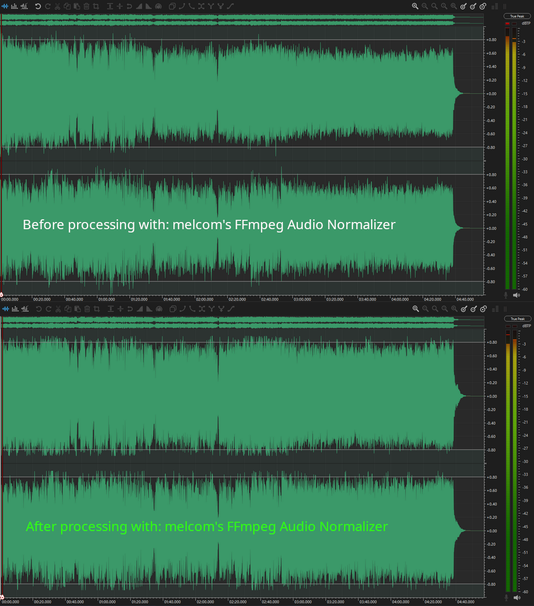
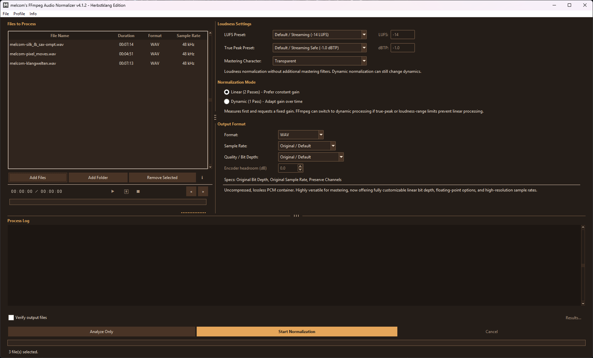
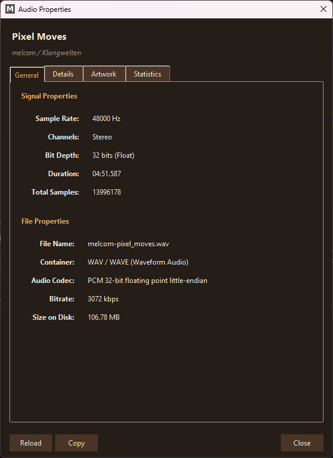
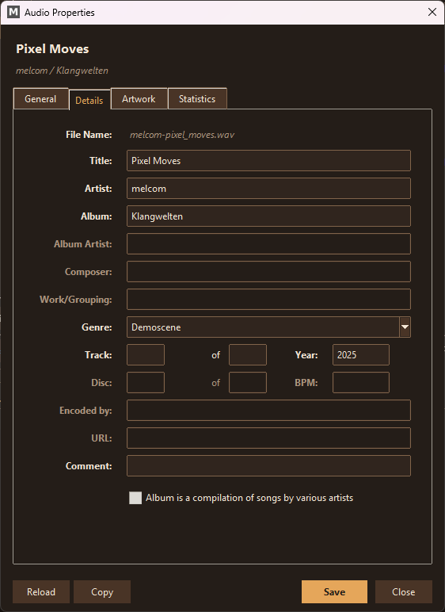
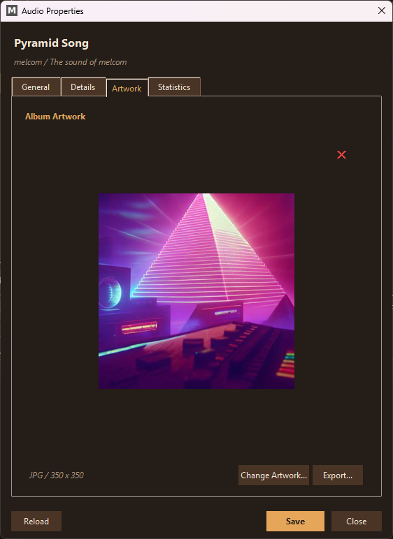
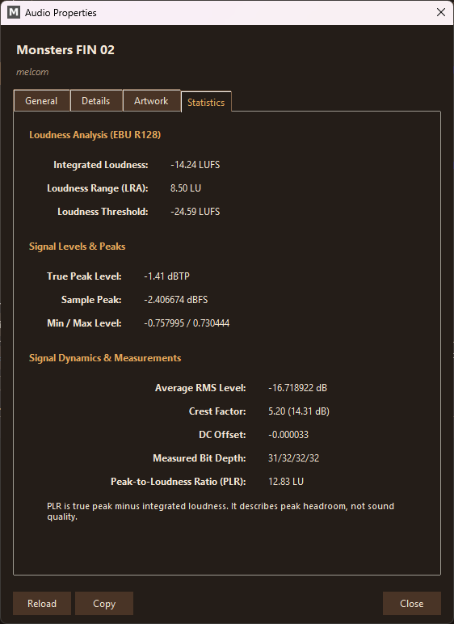
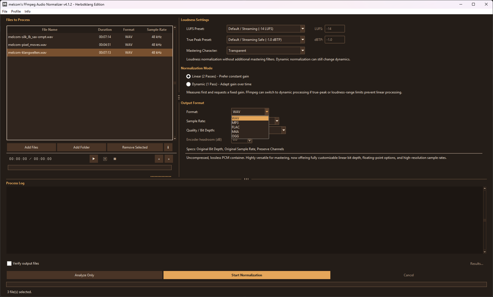

My Creations
A collection of software, browser scripts, GOG Galaxy community integrations, and original audio samples created or maintained by melcom. Project details, downloads, and source links are included where available.
# melcom's FFmpeg Audio Normalizer v4.1.2 (Herbstklang Edition)

Herbstklang Edition
melcom's FFmpeg Audio Normalizer is a free Windows application for loudness normalization based on EBU R128, LUFS and True Peak processing. Powered by FFmpeg, it supports WAV, MP3, FLAC, M4A, OGG and other common audio formats for individual files and complete batches.
The Herbstklang Edition adds batch analysis reports, optional verification of encoded output, and a workspace you can resize to suit your workflow. Separate analysis and normalization result windows offer clipboard reports and CSV export. Its new herbstklang theme brings warm brown backgrounds, amber accents and cream-colored text.
The application is available in English, German, Polish and Swedish, with dedicated help files for every included language. Questions or issues? Contact me.
Note: The complete FFmpeg suite is required. Download it from this page and select the folder containing ffmpeg.exe, ffplay.exe and ffprobe.exe in the program's Options.
Overview


Before and after normalization


Main Application Window
Audio Properties and Output Controls


General Properties


Metadata Editor


Artwork Manager


Loudness and Signal Statistics


Output Format Selection

Normalization Results
What's new in v4.1.2 (Herbstklang Edition)?
- Batch Analysis Results for loudness, True Peak, LRA, PLR and signal details, with comparisons against your selected targets
- Output Verification and Results with optional measurements of finished files and comparisons of original, target and output values
- Reports and CSV Export for analysis and normalization, with individual or complete clipboard reports and result windows that open automatically after completed runs
- Encoder Headroom from 0 to 3 dB for MP3, M4A and OGG to allow for peaks introduced during lossy encoding
- Adjustable Workspace with draggable dividers, saved window size and layout, a corner resize grip and a reset action
- Clear Encoding Defaults: 320 kbps CBR for MP3 and M4A, 320 kbps ABR for OGG, and explicit VBR quality presets
- PLR Statistics alongside the existing loudness and signal measurements
- Remembered Folders for audio files and album artwork across application restarts
- Metadata and Artwork Repairs, including MP3 URL compatibility with XMPlay, tag preservation and M4A cover handling
- herbstklang Theme with warm autumn colors, selected by default when no theme has been saved
Herbstklang Edition helps you inspect your original audio, review the finished output and arrange your workspace, with practical improvements to normalization, metadata and artwork handling.
For a full list of changes, see the included CHANGELOG.md.
Older Versions
Download v4.1.1 (Flickwerk Edition): scene.org / GitHub / dropbox.com
Download v4.1.0 Hotfix (Kontrollraum Edition): scene.org / GitHub / dropbox.com
Download v4.0.3 (Läderlappen Edition): scene.org / GitHub / dropbox.com
Download v3.2.0: scene.org / GitHub / dropbox.com
Download v3.1.0: scene.org / GitHub / dropbox.com
Download v3.0.1: scene.org / GitHub / dropbox.com
Download v3.0.0: scene.org / GitHub / dropbox.com
Download v2.2.2: scene.org / GitHub / dropbox.com
Download v2.2.1: scene.org / GitHub / dropbox.com
Download v2.2.0: scene.org / GitHub / dropbox.com
Support my work
melcom's FFmpeg Audio Normalizer is free and will remain free. If it helps with your audio projects and you'd like to show your appreciation, you're welcome to buy me a coffee through PayPal. Support is entirely optional and always appreciated.
Buy me a coffee (PayPal) (opens in a new tab)# Original Samples & Instruments
This collection contains original samples and instruments in FLAC format. They can be imported directly into OpenMPT. For use in Schism Tracker, convert the files to WAV first.
Conversion can be handled with the FLAC command-line tools or FLAC Frontend. If you would like a simple conversion batch file, contact me.
The samples are in my Dropbox account:
The collection currently contains more than 200 samples in their original lengths. You may edit and use them in your own projects. Credit is appreciated, but not required.
# GOG Galaxy 2.1+ (64-bit) Community Integrations
I maintain a collection of community integrations updated for the native 64-bit version of GOG Galaxy 2.1+. The goal is to keep existing integrations compatible with the modern client by updating dependencies, replacing outdated libraries and ensuring long-term maintainability.
The GitHub overview links to my released integrations for Amazon Games, Battle.net, EA app, Humble Bundle, IndieGala, itch.io, Rockstar Games, Steam and Ubisoft Connect. Each integration has its own repository. The overview also lists compatible integrations by other developers, with their maintainers clearly identified.
Integration Overview

Community Integration Status (snapshot)

GOG Galaxy 2.1 Integration Settings
Support my work
All my GOG Galaxy integrations are free and will remain free. If you find them useful and would like to show your appreciation, you're welcome to buy me a coffee through PayPal. Support is entirely optional and always appreciated.
Buy me a coffee (PayPal) (opens in a new tab)# melcom's GhostKey Sentinel v1.1
melcom's GhostKey Sentinel is a free, lightweight AutoHotkey script designed to fix mechanical keyboard chattering-the frustrating issue where a single key press registers multiple times.
The script runs quietly in the background and filters unwanted repeated key events without adding noticeable input lag. It is intended for keyboards that have begun registering duplicate presses.
Note: Requires the free AutoHotkey v2 software to be installed on your system.
What's new in v1.1?
- Bug Fix: Fixed a conflict with the Steam Overlay. The script now ignores the
Tabkey to ensure theShift + Tabshortcut works reliably in all applications and games.
Key Features
- Solves frustrating double-typing issues (key chattering).
- Runs silently in the background with minimal resource usage.
- Adds no noticeable input lag to your typing.
- Easy "set it and forget it" installation.
- Fully open-source and customizable.
Older Versions
Download v1.0: GitHub
# Highlighter with X - Tampermonkey Script (v1.3.0)
Highlighter with X is a compact userscript that lets you highlight any text on any webpage in yellow, green, or red, and remove the highlight instantly with a hover-activated "×" button.
It's perfect for marking up patch notes, articles, or forum posts. The script also automatically saves your highlights and restores them when you revisit the page.
- Custom colors for green & red
- Black text for maximum readability in dark mode
- Hover-X with white border and larger click area
- Keyboard shortcuts:
ALT+1/ALT+2/ALT+3to highlight,ALT+0to remove - Auto-saves highlights and restores them later
Requires the free Tampermonkey browser extension to run.